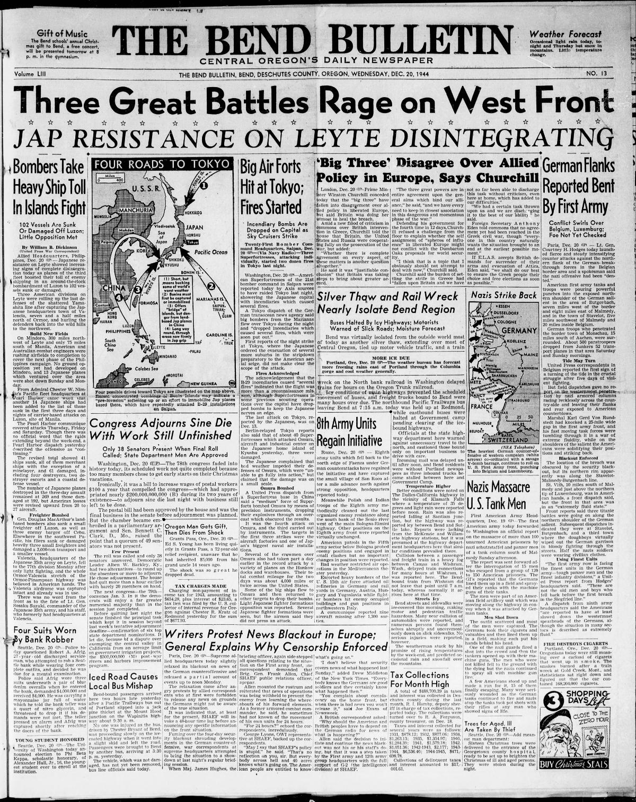

HN HN-547 · December 20, 1944 · War, Conflict & Security > War Crimes, Massacres & Genocide > POW killings and battlefield atrocities
Source: Indianapolis Times, p. 13 — original page; U.S. Army, Ardennes: Battle of the Bulge history.
Report: A delayed Army dispatch, drawing on survivors' accounts, reported Waffen-SS men machine-gunning more than 100 unarmed American prisoners near Malmedy during the Ardennes offensive.
Assessment: The December 17 massacre is documented. Later U.S. Army histories commonly state 84 American POWs were murdered; the initial over-100 estimate, compiled in wartime from escapees, must not be carried forward as the established count. The event itself must not be dismissed merely because the first figure changed.
Authentic images retrieved from Historic Oregon Newspapers (University of Oregon). Article crops are located using the archive's own OCR word coordinates and rendered at native crop resolution; article clips are assembled from the archive's own article-block images; page scans are reduced-size access renditions. No images were generated, mocked, or retouched.

Not yet acquired. Queued for provider-specific acquisition testing (see source-acquisition manifest).
URL (preserved verbatim): https://newspapers.library.in.gov/?a=d&d=IPT19441220.1.13
Saved research report: Historical_Newspaper_Event_Research_528-552_2026-10-23.md
Evidence note: A newspaper report means a historical publication made a claim; it does not establish that claim as fact. Contemporary reporting is separated from later scholarly context and our own assessment.